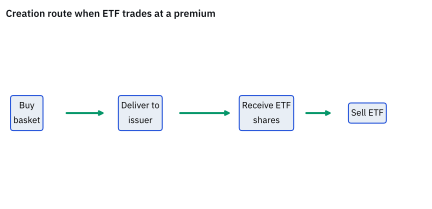
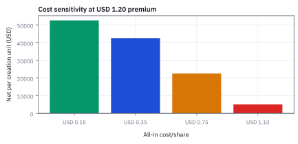

18.9 Exchange-Traded Fund (ETF) Creation-Redemption Arbitrage
ราคา ETF ถูกดึงให้อยู่ใกล้มูลค่าหุ้นที่กองทุนถือ เพราะสถาบันบางแห่ง (authorized participant) เอาหุ้นไปแลกเป็นหน่วยกองทุนได้ แต่การแลกมีต้นทุน ต้องทำเป็นก้อนใหญ่ และใช้เวลา ราคาจึงลอยห่างได้ในแถบที่กว้างเท่าต้นทุนนั้น
เทรดเดอร์คนหนึ่งเห็นว่า ETF ตัวหนึ่งขายในตลาดแพงกว่ามูลค่าหุ้นที่อยู่ข้างในกองทุน เขาคิดว่าเจอเงินฟรี: ซื้อหุ้นชุดนั้นมาในราคาถูก เอาไปแลกเป็นหน่วย ETF แล้วขายหน่วยในราคาแพง หน้านี้ถามว่าส่วนต่างที่เห็นบนจอเป็นเงินจริงได้แค่ไหน
ก่อนดูตัวเลข ต้องรู้จักของสามอย่าง
- ETF (exchange-traded fund) คือกองทุนที่ถือหุ้นชุดหนึ่งไว้ข้างใน เช่น หุ้นทุกตัวในดัชนี แล้วแบ่งเป็นหน่วย หน่วยนี้ซื้อขายในตลาดระหว่างวันเหมือนหุ้นหนึ่งตัว หุ้นชุดข้างในเรียกว่า “ตะกร้า”
- NAV (net asset value) คือมูลค่าตะกร้าหารด้วยจำนวนหน่วย บอกว่าหนึ่งหน่วยมีหุ้นข้างในมูลค่าเท่าไร
- AP (authorized participant) คือสถาบันการเงินไม่กี่แห่งที่มีสัญญากับผู้ออกกองทุน AP ส่งตะกร้าหุ้นไปแลกเป็นหน่วยใหม่ได้ แต่ต้องแลกเป็นก้อนใหญ่ ก้อนนี้เรียกว่า creation unit
ของที่รู้ (ตัวเลขทั้งหน้าเป็นตัวเลขสมมติ)
- ราคา ETF ในตลาด $P=\$101.20$ ต่อหน่วย
- มูลค่าตะกร้าต่อหน่วย $\mathrm{NAV}=\$100.00$
- ขนาด creation unit $N=50{,}000$ หน่วยต่อการแลกหนึ่งครั้ง หน้านี้เรียกการแลกหนึ่งครั้งว่า “หนึ่งรอบ”
เทรดเดอร์ใหม่คิดว่าแต่ละหน่วยได้ส่วนต่าง $P-\mathrm{NAV}$ จึงคูณด้วยขนาดก้อนตรง ๆ ได้ส่วนต่างต่อรอบ $G$
เขาบอกว่านี่คือเงินฟรี \$60,000 ต่อรอบ จริงไหม
ลองตอบก่อนเปิดเฉลย
ไม่ฟรี เพราะการแลกต้องจ่ายต้นทุนทุกขั้น: ค่าธรรมเนียมการแลก ส่วนต่างระหว่างราคาซื้อกับราคาขาย (spread) ของ ETF และของหุ้นในตะกร้า ราคาหุ้นที่ขยับขึ้นเพราะ AP ซื้อก้อนใหญ่ (impact) และค่าส่งมอบ หน้านี้จะนับต้นทุนเหล่านี้ให้ดูทีละก้อน รวมได้ $c_{\rm cr}=\$0.35$ ต่อหน่วย กำไรจริงจึงเหลือ
ถ้าตะกร้าซื้อยากจนต้นทุนเป็น \$1.50 ต่อหน่วย ส่วนต่างเดิมกลายเป็นขาดทุน $50{,}000\times(1.20-1.50)=-\$15{,}000$ และถ้า NAV \$100.00 มาจากราคาปิดของตลาดต่างประเทศที่ปิดไปแล้ว ส่วนต่าง \$1.20 นี้อาจไม่มีอยู่จริงเลย
ภาพรวมก่อนลงสูตร
ราคาหน่วย ETF ในตลาดเกิดจากคนซื้อขายกันเอง ไม่มีใครตั้งให้เท่ากับ NAV แล้วอะไรดึงสองราคานี้ให้อยู่ใกล้กัน คำตอบคือ AP เพราะ AP แลกของกับผู้ออกกองทุนได้สองทาง
- creation (สร้างหน่วย): ส่งตะกร้าหุ้นให้ผู้ออกกองทุน แล้วรับหน่วย ETF ใหม่กลับมา
- redemption (ไถ่ถอน): ส่งหน่วย ETF คืนผู้ออกกองทุน แล้วรับตะกร้าหุ้นกลับมา
ถ้า ETF แพงกว่าตะกร้า AP ซื้อตะกร้า แลกเป็นหน่วย แล้วขายหน่วยในตลาด ถ้า ETF ถูกกว่าตะกร้า AP ทำกลับทาง คือซื้อหน่วย แลกคืนเป็นตะกร้า แล้วขายหุ้น การซื้อของถูกและขายของชิ้นเดียวกันที่แพงกว่าพร้อมกันแบบนี้เรียกว่า arbitrage
ถ้าการแลกไม่มีต้นทุนเลย AP จะทำซ้ำไปเรื่อย ๆ จนส่วนต่างหายหมด ราคา ETF จึงต้องเท่ากับ NAV พอดี เหตุผลนี้เรียกว่า “ไม่มีเงินฟรี” (no-arbitrage) แต่การแลกจริงมีต้นทุนทุกขั้น และเป็นต้นทุนที่บทนี้นับมาแล้ว: ครึ่ง spread และ impact จาก market microstructure และการรอคิวจาก order book และ queue position ถ้าส่วนต่างเล็กกว่าต้นทุน AP จะไม่แลก เพราะแลกแล้วขาดทุน ราคา ETF จึงลอยได้อิสระในแถบที่กว้างเท่าต้นทุนการแลก
แถบนี้อธิบายสิ่งที่เห็นในตลาดจริง ETF ที่ถือหุ้นใหญ่ซึ่งซื้อขายง่ายมีราคาห่าง NAV แค่ไม่กี่ bp (1 bp คือ 0.01%) แต่ ETF ที่ถือพันธบัตรมีราคาห่าง NAV ได้เป็นเปอร์เซ็นต์ เพราะพันธบัตรซื้อขายยากกว่า ต้นทุนการแลกจึงสูงกว่า กลไกนี้สำคัญเพราะกองทุนแบบนี้ใหญ่มาก มีประมาณการว่าในปี 2020 กองทุนดัชนีรวมกันถือหุ้นสหรัฐฯ เกินหนึ่งในสามของมูลค่าตลาด
หน้านี้เดินทีละขั้น: วัดว่า ETF แพงกว่าตะกร้ากี่เปอร์เซ็นต์ ไล่เงินของการสร้างหน่วยหนึ่งรอบทีละก้อน หาแถบที่ราคาลอยได้ ทำทางกลับเมื่อ ETF ถูกกว่า ดูว่ากำไรเปลี่ยนแค่ไหนเมื่อต้นทุนเปลี่ยน แล้วดูสองเรื่องที่ทำให้ส่วนต่างบนจอไม่ใช่เงินจริง คือเวลาที่ห่างกันระหว่างสองขาของการเทรด และ NAV ที่คิดจากราคาเก่า รูปด้านล่างคือวงจรของการแลก
รูป — วงจรการสร้างและไถ่ถอนหน่วยระหว่าง AP ผู้ออกกองทุน และสองตลาด
ศัพท์ที่ใช้ในหัวข้อนี้
- ETF และ NAV
- ETF คือกองทุนที่ถือตะกร้าหุ้น (หรือพันธบัตร) แล้วแบ่งเป็นหน่วยที่ซื้อขายในตลาดระหว่างวันเหมือนหุ้น NAV คือมูลค่าตะกร้าหักหนี้สินของกองทุน หารด้วยจำนวนหน่วย ใช้เป็นเกณฑ์ว่าราคา ETF ตอนนี้แพงหรือถูก
- Authorized participant (AP)
- สถาบันการเงินที่มีสัญญากับผู้ออกกองทุน ส่งตะกร้าหุ้นไปแลกหน่วยใหม่ได้ (creation) และส่งหน่วยคืนไปแลกตะกร้าได้ (redemption) มีแต่ AP ที่ปิดส่วนต่างด้วยการแลกได้ คนทั่วไปทำไม่ได้
- Creation unit
- ขนาดขั้นต่ำของการแลกหนึ่งครั้ง เช่น 50,000 หน่วย ก้อนใหญ่ช่วยให้ค่าแลกที่จ่ายคงที่ต่อครั้งเฉลี่ยออกไปบางลงต่อหน่วย แต่ต้องใช้เงินก้อนใหญ่ต่อรอบ
- Premium และ discount
- ถ้าราคา ETF สูงกว่า NAV เรียกส่วนต่างว่า premium ถ้าต่ำกว่าเรียกว่า discount คิดเป็นเปอร์เซ็นต์ของ NAV ส่วนต่างนี้บอกว่าควรแลกทางไหน แต่จะได้เงินจริงก็ต่อเมื่อมันใหญ่กว่าต้นทุนการแลก
- Arbitrage และ no-arbitrage (ไม่มีเงินฟรี)
- arbitrage คือการซื้อของที่ถูกและขายของชิ้นเดียวกันที่แพงกว่าพร้อมกัน เพื่อเก็บส่วนต่างโดยไม่ต้องเดาทิศราคา หลักไม่มีเงินฟรีบอกว่า ถ้าทางแบบนี้มีกำไรแน่นอน คนจะทำซ้ำจนกำไรหายไป
- Spread, ราคากลาง และ impact
- spread คือส่วนต่างระหว่างราคาที่มีคนพร้อมขาย (ask) กับราคาที่มีคนพร้อมซื้อ (bid) ราคากลาง (mid) อยู่ตรงกลางระหว่างสองค่านี้ คนที่ซื้อหรือขายทันทีจึงเสียครึ่ง spread เทียบราคากลาง impact คือราคาที่ขยับหนีเพราะเราซื้อหรือขายก้อนใหญ่ ดูรายละเอียดที่ market microstructure
- Basis point (bp)
- หนึ่งในร้อยของหนึ่งเปอร์เซ็นต์ คือ 1 bp = 0.01%
- In-kind
- การแลกด้วยตัวหุ้นจริงแทนเงินสด กองทุนไม่ต้องซื้อขายหุ้นเอง ต้นทุนการซื้อขายจึงตกอยู่กับ AP และกองทุนไม่ต้องขายหุ้นจนเกิดกำไรที่ผู้ถือหน่วยต้องเสียภาษี
- Indicative NAV
- มูลค่าตะกร้าต่อหน่วยที่คำนวณใหม่ระหว่างวันจากราคาล่าสุด ในสหรัฐฯ เผยแพร่ทุก 15 วินาที แต่ถ้าตลาดของหุ้นในตะกร้าปิดอยู่ ตัวเลขนี้ก็ยังใช้ราคาปิดเก่า
- Index futures (สัญญาล่วงหน้าของดัชนี)
- สัญญาที่มูลค่าขึ้นลงตามดัชนีหุ้นตัวหนึ่ง หลายตัวซื้อขายได้เกือบตลอดวัน แม้ตลาดหุ้นของดัชนีนั้นปิดอยู่ จึงใช้อ่านว่าตลาดคิดว่าหุ้นชุดนั้นมีค่าเท่าไรตอนนี้ และใช้ป้องกันความเสี่ยง (hedge) ราคาตะกร้าได้
สัญลักษณ์และหน่วย
| สัญลักษณ์ | ความหมาย | หน่วย |
|---|---|---|
| $P,\ \mathrm{NAV}$ | ราคา ETF ในตลาด (ราคากลาง) และมูลค่าตะกร้าต่อหน่วย | ดอลลาร์ต่อหน่วย |
| $\pi$ | premium คือ $(P-\mathrm{NAV})/\mathrm{NAV}$ ค่าติดลบคือ discount (ตัวนี้เป็นชื่อตัวแปร ไม่ใช่ 3.14) | สัดส่วนของ NAV |
| $N$ | ขนาด creation unit คือจำนวนหน่วยต่อการแลกหนึ่งรอบ | หน่วย |
| $G,\ \Pi$ | ส่วนต่างต่อรอบก่อนหักต้นทุน และกำไรต่อรอบหลังหักต้นทุน | ดอลลาร์ต่อรอบ |
| $c_{\rm cr},\ c_{\rm rd}$ | ต้นทุนรวมต่อหน่วยของการสร้าง (creation) และการไถ่ถอน (redemption) | ดอลลาร์ต่อหน่วย |
| $F,\ s_E$ | ค่าแลกต่อครั้ง และ spread ของ ETF | ดอลลาร์ต่อครั้ง, ดอลลาร์ต่อหน่วย |
| $s_B,\ I,\ c_s$ | ครึ่ง spread ของหุ้นในตะกร้า impact และค่าเงินทุนกับค่าส่งมอบ ทั้งหมดคิดต่อหน่วย ETF | ดอลลาร์ต่อหน่วย |
| $\mathrm{SD}_{30},\ \mathrm{SD}_{\Pi}$ | SD ของการขยับของราคาตะกร้าใน 30 นาที และ SD ของกำไรต่อรอบ | ดอลลาร์ต่อหน่วย, ดอลลาร์ต่อรอบ |
| $z,\ \Phi$ | กำไรที่คาดนับเป็นจำนวน SD และพื้นที่ใต้รูประฆัง Normal มาตรฐานทางซ้ายของจุดหนึ่ง | ไม่มีหน่วย |
ขั้นที่ 1 — วัด premium
ก่อนคิดเรื่องเงิน ต้องมีตัววัดว่า ETF แพงกว่าตะกร้าแค่ไหน ส่วนต่างเป็นดอลลาร์เทียบข้าม ETF ไม่ได้ เพราะแต่ละตัวราคาไม่เท่ากัน ส่วนต่าง \$1 ของหน่วยราคา \$100 ใหญ่กว่าส่วนต่าง \$1 ของหน่วยราคา \$500 มาก จึงหารส่วนต่างด้วย NAV ให้เป็นสัดส่วน เรียกว่า premium เขียนแทนด้วย $\pi$ ค่าบวกแปลว่า ETF แพงกว่าตะกร้า ค่าลบเรียกว่า discount แปลว่า ETF ถูกกว่าตะกร้า
ETF แพงกว่าตะกร้า 1.20% ของ NAV ทางที่ได้กำไรคือซื้อของถูกแล้วขายของแพง ของถูกคือตะกร้า ของแพงคือหน่วย ETF AP จึงซื้อตะกร้า แลกเป็นหน่วย แล้วขายหน่วย การทำแบบนี้ปิดส่วนต่างจากสองด้าน เพราะการขายหน่วยใหม่กดราคา ETF ลง และการซื้อตะกร้าดันราคาหุ้นในตะกร้าขึ้น แต่ premium บอกแค่ว่าควรเดินทางไหน ยังไม่บอกว่าได้เงินเท่าไร ขั้นถัดไปจึงนับเงินของเส้นทางนี้
ขั้นที่ 2 — เส้นทางการสร้างหน่วยเป็นเงิน และต้นทุนห้าก้อน
ขั้นนี้นับเงินของการสร้างหน่วยหนึ่งรอบ AP ซื้อหุ้นในตะกร้าครบชุดสำหรับ 50,000 หน่วย ส่งให้ผู้ออกกองทุนแลกเป็นหน่วยใหม่ แล้วขายหน่วยนั้นในตลาด ทุกขั้นมีค่าผ่านทาง ต้นทุนมีห้าก้อน ทุกก้อนคิดเป็นดอลลาร์ต่อหน่วย ETF (ตัวเลขสมมติ)
- ค่าแลก $F=\$500$ ต่อครั้ง คือค่าธรรมเนียมที่ผู้ออกกองทุนเก็บทุกครั้งที่แลก ไม่ว่าก้อนจะใหญ่แค่ไหน ต่อหน่วยจึงเป็น $F/N=500/50{,}000=\$0.01$
- spread ของ ETF $s_E=\$0.04$ คือราคาที่มีคนพร้อมขาย (ask) สูงกว่าราคาที่มีคนพร้อมซื้อ (bid) อยู่ 4 เซนต์ ราคา \$101.20 คือราคากลางระหว่างสองค่านี้ AP ขายหน่วยได้ที่ bid ซึ่งต่ำกว่าราคากลางครึ่ง spread จึงเสีย $s_E/2=0.04/2=\$0.02$
- ครึ่ง spread ของหุ้นในตะกร้า $s_B=\$0.15$ เหตุผลเดียวกัน แต่อยู่ฝั่งซื้อ AP ต้องซื้อหุ้นทุกตัวที่ ask ซึ่งสูงกว่าราคากลาง
- impact $I=\$0.15$ คือราคาหุ้นที่ขยับขึ้นเพราะ AP ซื้อก้อนใหญ่ ยิ่งซื้อมาก ยิ่งต้องไล่ซื้อที่ราคาแพงขึ้น
- ค่าเงินทุนและค่าส่งมอบ $c_s=\$0.02$ คือดอกเบี้ยของเงินที่จมอยู่ระหว่างรอส่งมอบ บวกค่าดำเนินการส่งหุ้นกับหน่วย
ให้ $G$ คือส่วนต่างต่อรอบก่อนหักต้นทุน (เงินที่ได้จากขายหน่วย ลบเงินที่จ่ายซื้อตะกร้า) $c_{\rm cr}$ คือต้นทุนรวมต่อหน่วยของการสร้าง และ $\Pi$ คือกำไรต่อรอบหลังหักต้นทุน
สูตรของ $\Pi$ บอกว่ากำไรต่อหน่วยคือส่วนต่างลบต้นทุนรวม แล้วคูณด้วยขนาดก้อน จุดที่ต้องระวังคือค่าแลก $F$ เป็นก้อนเดียวที่จ่ายครั้งเดียวต่อรอบ ไม่ใช่ต่อหน่วย จึงต้องหารด้วย $N$ ก่อน แล้วจึงบวกกับก้อนอื่นที่คิดต่อหน่วยอยู่แล้วได้ ถ้าคูณทุกก้อนด้วย $N$ กลับเป็นดอลลาร์ต่อรอบ จะเห็นว่าเงิน \$60,000 หายไปที่ไหน
- ค่าแลก $F=\$500$
- ครึ่ง spread ของ ETF $50{,}000\times0.02=\$1{,}000$
- ครึ่ง spread ของหุ้นในตะกร้า $50{,}000\times0.15=\$7{,}500$
- impact $50{,}000\times0.15=\$7{,}500$
- ค่าเงินทุนและค่าส่งมอบ $50{,}000\times0.02=\$1{,}000$
รวมกันได้ $500+1{,}000+7{,}500+7{,}500+1{,}000=\$17{,}500$ ซึ่งเท่ากับ $50{,}000\times0.35$ และ $60{,}000-17{,}500=\$42{,}500$ ตรงกับ $\Pi$ ค่าแลกซึ่งเป็นค่าธรรมเนียมทางการกลับเป็นก้อนเล็กที่สุด ก้อนใหญ่คือการซื้อหุ้นในตะกร้าจริง ๆ คือ spread กับ impact รวมกัน $7{,}500+7{,}500=\$15{,}000$ นี่คือต้นทุนแบบเดียวกับที่ market microstructure วัด
รูป — จากส่วนต่าง \$60,000 เหลือ \$42,500

ขั้นที่ 3 — ไม่มีเงินฟรีสองทาง: ราคาลอยได้ในแถบ
ขั้นที่แล้วดูแค่ทางเดียว ขั้นนี้ดูทั้งสองทางพร้อมกัน เพื่อหาว่าราคา ETF ห่าง NAV ได้แค่ไหนก่อนที่ AP จะเข้ามาแลก หลักที่ใช้คือไม่มีเงินฟรี: ถ้าทางไหนให้กำไรแน่นอน AP จะทำซ้ำจนกำไรหายไป เมื่อตลาดนิ่งแล้ว ทั้งการสร้างหน่วยและการไถ่ถอนจึงต้องไม่มีกำไร
ถ้าไม่มีต้นทุนเลย การสร้างที่ไม่มีกำไรบังคับให้ $P\le\mathrm{NAV}$ และการไถ่ถอนที่ไม่มีกำไรบังคับให้ $P\ge\mathrm{NAV}$ สองข้อนี้จริงพร้อมกันได้ทางเดียวคือ $P=\mathrm{NAV}$ พอมีต้นทุน แต่ละข้อจะหย่อนลงคนละข้าง
ต้นทุนของการไถ่ถอน $c_{\rm rd}$ มีห้าก้อนเหมือนการสร้าง แต่คราวนี้ AP ต้องขายหุ้นในตะกร้าแทนการซื้อ สมมติว่าการขายก้อนใหญ่กดราคาหุ้นแรงกว่าการซื้อ impact จึงเป็น \$0.20 แทน \$0.15 ก้อนอื่นเท่าเดิม
ทีนี้เขียนเงื่อนไขไม่มีกำไรของทั้งสองทาง แล้วรวมเป็นแถบเดียว
สองอสมการแรกพูดเรื่องเดียวกัน: กำไรต่อหน่วยของทั้งสองทางต้องไม่เป็นบวก ขั้นที่ต้องดูคือการรวมสองข้อเป็นแถบเดียว ย้ายต้นทุนไปอีกข้างได้ $P-\mathrm{NAV}\le c_{\rm cr}$ และ $P-\mathrm{NAV}\ge-c_{\rm rd}$ แล้วหารทั้งคู่ด้วย NAV ทำได้โดยทิศของอสมการไม่กลับ เพราะ NAV เป็นบวก ด้านกลางจึงกลายเป็น $\pi$ ทั้งสองข้อ
ในแถบนี้ไม่มี AP คนไหนแลก เพราะแลกทางไหนก็ขาดทุน ราคา ETF จึงขยับตามแรงซื้อขายในตลาด ETF ได้อิสระ แถบไม่จำเป็นต้องกว้างเท่ากันสองฝั่ง เพราะการขายตะกร้าอาจแพงกว่าการซื้อ ในโจทย์เปิดหน้า premium 1.20% อยู่เหนือขอบบน การสร้างหน่วยจึงเหลือกำไร $1.20\%-0.35\%=0.85\%$ ของ NAV หรือ \$0.85 ต่อหน่วย
แถบนี้คือเหตุที่ ETF ซึ่งถือหุ้นใหญ่ที่ซื้อขายง่ายมีราคาห่าง NAV แค่ไม่กี่ bp เพราะต้นทุนการแลกต่ำ แถบจึงแคบ ส่วน ETF พันธบัตร หรือ ETF หุ้นตลาดเกิดใหม่ (ประเทศที่ตลาดหุ้นยังเล็กและซื้อขายยาก) มีราคาห่าง NAV ได้ 1 ถึง 2% เป็นเวลานาน เพราะแถบกว้าง และไม่มีใครปิดส่วนต่างได้โดยไม่ขาดทุน หลักนี้ใช้ได้กับของทุกอย่างที่สร้างขึ้นใหม่จากของอื่นได้: ถ้าการสร้างมีต้นทุน ราคาที่ไม่มีเงินฟรีจะเป็นแถบ ไม่ใช่จุดเดียว
รูป — กำไรของ AP ตามส่วนต่างราคา: สองทางกับแถบตรงกลาง
ขั้นที่ 4 — ทางกลับ: ETF ถูกกว่าตะกร้า \$1.20
คราวนี้สถานการณ์กลับด้าน ETF ขายในตลาดถูกกว่ามูลค่าหุ้นข้างใน ของถูกคือหน่วย ETF และของแพงคือตะกร้า AP จึงต้องใช้ทางไถ่ถอน: ซื้อหน่วยในตลาด ส่งคืนผู้ออกกองทุนเพื่อรับตะกร้า แล้วขายหุ้นในตะกร้า
โจทย์ให้อะไรมาบ้าง:
- ราคา ETF $P=\$98.80$ ต่อหน่วย
- มูลค่าตะกร้าต่อหน่วย $\mathrm{NAV}=\$100.00$
- ต้นทุนไถ่ถอน $c_{\rm rd}=\$0.40$ ต่อหน่วย ตามที่คำนวณไว้ตอนหาแถบ
- ขนาดก้อน $N=50{,}000$ หน่วย
คำตอบ: discount 1.20% อยู่ต่ำกว่าขอบล่าง −0.40% ของแถบ การไถ่ถอนจึงคุ้ม AP ซื้อ ETF 50,000 หน่วยที่ \$98.80 ส่งไถ่ถอนเป็นตะกร้า แล้วขายหุ้นในตะกร้าซึ่งมีมูลค่า \$100.00 ต่อหน่วย ได้ส่วนต่าง \$1.20 หักต้นทุน \$0.40 เหลือ \$0.80 ต่อหน่วย หรือ \$40,000 ต่อรอบ ได้น้อยกว่าทางสร้างหน่วยที่ส่วนต่างเท่ากันอยู่ $42{,}500-40{,}000=\$2{,}500$ เพราะการขายตะกร้ามี impact มากกว่าการซื้อ
ตรวจเองใน 10 วินาที: ทิศต้องเป็นซื้อของถูก (ETF) แล้วขายของแพง (ตะกร้า) ถ้าทำกลับด้าน คือซื้อตะกร้าที่ \$100.00 สร้างหน่วย แล้วขาย ETF ที่ \$98.80 ต่อหน่วยจะได้ $98.80-100.00-0.35=-\$1.55$ ขาดทุนแน่นอน
ขั้นที่ 5 — ความไวต่อต้นทุน: ตะกร้าที่ซื้อยาก
ต้นทุน \$0.35 ต่อหน่วยเป็นของตะกร้าหุ้นใหญ่ที่ซื้อง่าย ถ้าตะกร้าซื้อยากกว่านี้ spread และ impact จะใหญ่ขึ้นมาก ตัวอย่างที่แย่สุดคือตะกร้าพันธบัตรในวันที่ตลาดตึงเครียด คือวันที่คนแห่ขายและแทบไม่มีใครรับซื้อ ขั้นนี้ถามว่ากำไรต่อรอบไวต่อต้นทุนแค่ไหน
โจทย์ให้อะไรมาบ้าง:
- ส่วนต่างเท่าเดิม $P-\mathrm{NAV}=\$1.20$ ต่อหน่วย
- ขนาดก้อน $N=50{,}000$ หน่วย
- ต้นทุนการสร้างต่อหน่วย $c$ ลองห้าระดับ (สมมติ): \$0.15, \$0.35, \$0.75, \$1.10 และ \$1.50 จากตะกร้าที่ซื้อง่ายที่สุดไปจนถึงยากที่สุด
คำตอบ: กำไรต่อรอบลดลงเป็นเส้นตรงเมื่อต้นทุนเพิ่ม เพราะ $\Pi(c)$ เป็นเส้นตรงของ $c$ ที่มีความชัน $-50{,}000$ กำไรติดลบทันทีที่ต้นทุนเกินส่วนต่าง \$1.20 ในวันที่ตลาดพันธบัตรตึงเครียด ต้นทุนซื้อขายตะกร้าพุ่งขึ้น แถบจึงกว้างขึ้นเอง ETF ที่ราคาห่าง NAV มากในวันนั้นจึงไม่ได้แปลว่ามีเงินฟรี ราคา ETF อาจกำลังบอกราคาขายจริงของพันธบัตรได้เร็วกว่า NAV เพราะ NAV ของพันธบัตรมักคิดจากราคาประเมิน คือราคาที่ผู้ประเมินคาดว่าน่าจะขายได้ ไม่ใช่ราคาที่มีคนซื้อขายกันจริง
ตรวจเองใน 10 วินาที: ต้นทุนเพิ่ม 1 เซนต์ กำไรต่อรอบหาย $50{,}000\times0.01=\$500$ จาก \$0.35 ไป \$1.50 ต้นทุนเพิ่ม 115 เซนต์ กำไรจึงหาย $115\times500=\$57{,}500$ และ $42{,}500-57{,}500=-15{,}000$ ตรงกับแถวสุดท้าย
รูป — กำไรต่อรอบเมื่อต้นทุนเปลี่ยน

ขั้นที่ 6 — เวลาระหว่างสองขา: ส่วนต่างล็อกได้เมื่อทำพร้อมกันเท่านั้น
กำไร \$0.85 ต่อหน่วยมีข้อสมมติซ่อนอยู่: AP ซื้อตะกร้าและขาย ETF ในเวลาเดียวกัน การซื้อและการขายนี้เรียกว่า “สองขา” ของการเทรด ในชีวิตจริงสองขาอาจห่างกัน เช่น AP ขาย ETF ไปก่อน แล้วซื้อตะกร้าตามหลังอีก 30 นาที ระหว่างนั้นราคาตะกร้าเดินได้ ถ้าราคาตะกร้าขึ้น AP ต้องจ่ายแพงขึ้น และกำไรที่คิดไว้ก็หายไป ขั้นนี้วัดว่าความเสี่ยงนี้ใหญ่แค่ไหน
ของที่รู้:
- ความผันผวนรายวันของตะกร้า 1% (สมมติ) คือ SD ของผลตอบแทนหนึ่งวันเท่ากับ 1% ตะกร้ามูลค่า \$100 ต่อหน่วยจึงมักขยับขึ้นลงราว $0.01\times100=\$1$ ในหนึ่งวัน
- วันซื้อขายของตลาดหุ้นสหรัฐฯ เปิด 9:30 ปิด 16:00 คือ 6.5 ชั่วโมง หรือ $6.5\times60=390$ นาที
- สองขาห่างกัน 30 นาที (สมมติ) คิดเป็น $30/390$ ของวันซื้อขาย
ราคาที่ขยับในช่วงเวลาที่ไม่ทับกันเป็นอิสระต่อกัน variance (SD ยกกำลังสอง) จึงบวกกันตามเวลา ส่วน SD เป็นรากของ variance จึงโตตามรากที่สองของเวลา ตาม สามสมบัติของ Brownian motion เราจึงหา SD ของ 30 นาทีได้จาก SD รายวัน แล้วเทียบกับกำไรที่คาดไว้
ขั้นที่ต้องเข้าใจคือการคูณด้วย $\sqrt{30/390}$ ไม่ใช่ $30/390$ เพราะ 30 นาทีคือ $30/390$ ของวัน variance ของการขยับจึงเป็น $30/390$ ของ variance รายวัน และ SD ซึ่งเป็นรากของ variance จึงเป็น $\sqrt{30/390}=0.2774$ เท่าของ SD รายวัน ถ้าคูณด้วย $30/390=0.0769$ ตรง ๆ จะได้ความเสี่ยงเล็กไป $0.2774/0.0769=3.6$ เท่า
ระหว่าง 30 นาทีนั้น กำไรของรอบเดียวแกว่งได้ SD \$13,868 ส่วน $z$ คือกำไรที่คาดไว้นับเป็นจำนวน SD กำไรจะติดลบก็ต่อเมื่อราคาตะกร้าขึ้นเกิน \$0.85 ต่อหน่วยระหว่างรอ ซึ่งคือเกิน 3.06 SD การขยับของราคาในช่วงสั้นมีรูปทรงแบบระฆัง Normal โอกาสนี้จึงเป็นพื้นที่หางซ้ายของระฆังที่ $-3.06$ เขียนว่า $\Phi(-3.06)$ ได้แค่ 0.11% ส่วนต่าง \$1.20 จึงยังคุ้มแม้สองขาห่างกัน
แต่ถ้าส่วนต่างเหลือแค่ \$0.50 ต่อหน่วย ผลจะต่างกันมาก กำไรที่คาดต่อหน่วยเหลือ $0.50-0.35=\$0.15$ ขณะที่ SD ของการขยับเท่าเดิม
กำไรที่คาด \$7,500 เล็กกว่า SD ของกำไรต่อรอบ \$13,868 ราวสามรอบในสิบรอบจึงขาดทุน AP จึงทำสองขาให้เกือบพร้อมกัน และระหว่างรอก็ป้องกันความเสี่ยง (hedge) ด้วยสัญญาล่วงหน้าของดัชนี (index futures) ซึ่งเป็นสัญญาที่มูลค่าขึ้นลงตามดัชนี ถ้าราคาตะกร้าขึ้นระหว่างรอ futures ที่ AP ซื้อไว้ก็ได้กำไรมาชดเชย
รูป — ผลของหนึ่งรอบเมื่อสองขาห่างกัน 30 นาที
ขั้นที่ 7 — NAV ที่ล้าสมัย: premium ที่ไม่มีอยู่จริง
เรื่องสุดท้ายเป็นกับดักที่หลอกได้แม้จะคิดต้นทุนครบแล้ว ETF บางตัวซื้อขายในนิวยอร์ก แต่ถือหุ้นของประเทศอื่น เช่น ETF ที่ถือหุ้นญี่ปุ่น ตอนตลาดนิวยอร์กเปิดเป็นเวลากลางคืนของญี่ปุ่น ตลาดโตเกียวจึงปิดอยู่ NAV ของกองทุนจึงคิดจากราคาปิดของโตเกียวเมื่อคืน ถ้ามีข่าวหลังโตเกียวปิด NAV ไม่ขยับตาม แต่ราคา ETF ในนิวยอร์กขยับ ของที่บอกได้ว่าตะกร้ามีค่าเท่าไรตอนนี้คือสัญญาล่วงหน้าของดัชนีญี่ปุ่น (index futures) ซึ่งยังซื้อขายอยู่ระหว่างวันของนิวยอร์ก
โจทย์ให้อะไรมาบ้าง:
- ราคา ETF ในนิวยอร์ก $P=\$101.20$
- NAV จากราคาปิดของโตเกียวเมื่อคืน \$100.00 ต่อหน่วย
- มูลค่าตะกร้าตอนนี้ที่อ่านจากราคา index futures \$101.50 ต่อหน่วย (สมมติ) เรียกว่า $\mathrm{NAV}_{\rm fair}$
- ต้นทุนการสร้าง $c_{\rm cr}=\$0.35$ ต่อหน่วย และขนาดก้อน $N=50{,}000$
premium ที่จอแสดงเทียบกับ NAV เก่า ส่วน premium ที่มีความหมายต้องเทียบกับมูลค่าตอนนี้ ลองคิดทั้งสองแบบ แล้วคิดเงินที่ได้จริงถ้าทำตามตัวเลขบนจอ
คำตอบ: เมื่อเทียบกับมูลค่าตะกร้าตอนนี้ ETF ถูกกว่า 0.30% ไม่ได้แพงเลย ถ้าเชื่อ premium 1.20% บนจอ แล้วขาย ETF เพื่อสร้างหน่วย AP ต้องซื้อตะกร้าตอนโตเกียวเปิด ที่ราคาราว \$101.50 จึงเสีย \$0.30 ต่อหน่วยตั้งแต่แรก บวกต้นทุน \$0.35 รวมขาดทุน \$32,500 ต่อรอบ ราคา ETF ในนิวยอร์กกำลังบอกข่าวที่ NAV ยังไม่รู้ indicative NAV ระหว่างวันก็ช่วยไม่ได้ เพราะคำนวณจากราคาปิดเดิมของโตเกียว ซึ่งไม่ขยับระหว่างที่โตเกียวปิด
ตรวจเองใน 10 วินาที: ต่อหน่วยเสีย $(101.20-101.50)-0.35=-0.30-0.35=-0.65$ ดอลลาร์ และ $50{,}000\times(-0.65)=-32{,}500$
รูป — premium บนจอเทียบ NAV เก่า ไม่ใช่เทียบมูลค่าตอนนี้
ความผิดที่ให้คำตอบผิดแบบเงียบ ๆ
นับส่วนต่างก่อนหักต้นทุนเป็นกำไร: ส่วนต่างบนจอยังไม่ใช่เงิน ต้องหักต้นทุนการแลกก่อน ตัวเลขผิดคือ $50{,}000\times1.20=\$60{,}000$ ตัวเลขถูกคือ $50{,}000\times(1.20-0.35)=\$42{,}500$ และถ้าตะกร้าซื้อยากจนต้นทุนเป็น \$1.50 จะได้ $50{,}000\times(1.20-1.50)=-\$15{,}000$
เชื่อ NAV ที่คิดจากราคาเก่า: ETF ที่ถือหุ้นต่างประเทศต้องเทียบกับมูลค่าตะกร้าตอนนี้ ไม่ใช่ NAV เมื่อคืน ตัวเลขผิดคือ $(101.20-100.00)/100.00=+1.20\%$ ตัวเลขถูกคือ $(101.20-101.50)/101.50=-0.30\%$ ถ้าทำตามตัวเลขบนจอจะได้ $50{,}000\times(-0.30-0.35)=-\$32{,}500$
คิดว่าแถบกว้างเท่ากันสองฝั่ง: ถ้าการขายตะกร้าแพงกว่าการซื้อ ขอบล่างจะอยู่ไกลกว่าขอบบน (−0.40% เทียบ +0.35%) คนที่คิดว่าขอบล่างอยู่ที่ −0.35% จะเห็น discount 0.38% แล้วคิดว่าได้ $50{,}000\times(0.38-0.35)=+\$1{,}500$ แต่ต้นทุนไถ่ถอนจริงคือ \$0.40 จึงได้ $50{,}000\times(0.38-0.40)=-\$1{,}000$ ต่อรอบ
ทำสองขาห่างกัน: ถ้าซื้อตะกร้าหลังขาย ETF 30 นาที กำไรที่คาดไว้ไม่ได้ล็อกแล้ว คนที่ลืมเรื่องนี้จะคิดว่าส่วนต่าง \$0.50 ได้ \$7,500 แน่นอน แต่กำไรต่อรอบแกว่งได้ $\mathrm{SD}_{\Pi}=50{,}000\times0.2774=\$13{,}868$ โอกาสขาดทุนจริงคือ $\Phi(-0.15/0.2774)=\Phi(-0.541)=29.4\%$
ใช้ทำอะไรบนโต๊ะจริง
สามกลุ่มใช้แถบนี้ทุกวัน กลุ่มแรกคือ AP และผู้ดูแลสภาพคล่องของ ETF (market maker คือบริษัทที่ตั้งราคาซื้อและราคาขายไว้ในตลาดตลอดเวลา) พวกเขาคำนวณแถบนี้ทุกวินาทีจากราคาหุ้นในตะกร้า และจาก spread กับ impact ที่วัดเอง แล้วสร้างหรือไถ่ถอนเมื่อราคาหลุดแถบ กลุ่มที่สองคือผู้จัดการพอร์ตที่ซื้อ ETF พวกเขาเทียบ premium กับแถบ เพื่อรู้ว่าจ่ายแพงไปแค่ไหน กลุ่มที่สามคือคนที่ต้องประเมินมูลค่าพันธบัตรในวันตลาดตึงเครียด พวกเขาใช้ discount ของ ETF พันธบัตรเป็นข้อมูลว่าตะกร้าขายได้จริงเท่าไร แทน NAV ที่ยังใช้ราคาประเมินเดิม
ทำไมคนทั่วไปทำ arbitrage นี้เองไม่ได้ เพราะมีแต่ AP ที่แลกกับผู้ออกกองทุนได้ และต้องแลกเป็นก้อนใหญ่ แม้แต่ AP เองก็ติดข้อจำกัดสามอย่าง อย่างแรกคืองบดุล คือเงินทุนที่ AP ใช้ถือของได้ ถ้าใช้เต็มแล้ว ส่วนต่างจะค้างอยู่ได้นาน อย่างที่สองคือการยืมหน่วยหรือหุ้นมาขายก่อน เมื่อต้องขายของที่ยังไม่มี (short selling) ถ้ายืมยากหรือค่ายืมแพง ส่วนต่างจะอยู่ต่อ อย่างที่สามคือความเสี่ยงระหว่างสองขาที่คำนวณไว้ข้างบน ข้อจำกัดสามอย่างนี้คือเหตุเดียวกับที่ทำให้ส่วนต่างราคาหลายแบบในตลาดไม่หายไปทันที
ทำไมแลกเป็นตัวหุ้น ไม่ใช่เงินสด ถ้ากองทุนรับเงินสดแล้วซื้อหุ้นเอง ต้นทุนการซื้อขายจะตกกับผู้ถือหน่วยทุกคน และเมื่อมีคนไถ่ถอน กองทุนต้องขายหุ้นจนเกิดกำไรที่ต้องเสียภาษี การแลกแบบ in-kind จึงผลักต้นทุนทั้งหมดไปที่ AP ซึ่งยอมรับ เพราะได้ส่วนต่างเป็นค่าตอบแทน
ขนาดที่ใหญ่ของกองทุนดัชนีมีอีกด้านหนึ่ง คือทุกคนรู้ล่วงหน้าว่าเงินจะไหลไปทางไหน เมื่อดัชนีเปลี่ยนรายชื่อหุ้น ETF และกองทุนดัชนีทุกตัวต้องซื้อหุ้นที่เข้าดัชนีตอนปิดตลาดวันเดียวกัน คนที่ซื้อหุ้นนั้นดักไว้ก่อนแล้วขายให้กองทุนตอนปิดตลาดจึงได้ค่าตอบแทน และผู้ถือหน่วยกองทุนดัชนีเป็นคนจ่ายต้นทุนนี้โดยอ้อม
โจทย์ตรวจความเข้าใจ
1. AP เห็น ETF ตัวเดียวกับในหน้านี้ขายในตลาดแพงกว่าตะกร้าเล็กน้อย ราคา ETF $P=\$100.60$ มูลค่าตะกร้าต่อหน่วย $\mathrm{NAV}=\$100.00$ ต้นทุนการสร้าง $c_{\rm cr}=\$0.35$ ต่อหน่วย ก้อนละ $N=50{,}000$ หน่วย ควรสร้างหน่วยไหม และได้เท่าไรต่อรอบ
เฉลย
หา premium ก่อน แล้วเทียบกับขอบบนของแถบ +0.35%
premium 0.60% อยู่เหนือขอบบน 0.35% จึงคุ้ม ได้ \$12,500 ต่อรอบ
2. คราวนี้ ETF ขายถูกกว่าตะกร้าเล็กน้อย ราคา ETF $P=\$99.70$ มูลค่าตะกร้าต่อหน่วย $\mathrm{NAV}=\$100.00$ ต้นทุนไถ่ถอน $c_{\rm rd}=\$0.40$ ต่อหน่วย ก้อนละ 50,000 หน่วย AP ควรไถ่ถอนไหม
เฉลย
หา discount แล้วเทียบกับขอบล่างของแถบ −0.40%
discount 0.30% ยังอยู่ในแถบ เพราะไม่ถึงขอบล่าง −0.40% ไถ่ถอนแล้วขาดทุน \$5,000 ต่อรอบ จึงไม่มี AP คนไหนทำ ราคา ETF จึงค้างอยู่ที่ \$99.70 ได้
3. ผู้ออกกองทุนลดขนาดก้อนจาก 50,000 เหลือ $N=25{,}000$ หน่วย แต่ค่าแลกยังเป็น $F=\$500$ ต่อครั้ง ต้นทุนก้อนอื่นต่อหน่วยเท่าเดิม ($s_E/2=0.02$, $s_B=0.15$, $I=0.15$, $c_s=0.02$) ที่ส่วนต่าง \$1.20 ต่อหน่วย ต้นทุนรวมต่อหน่วยและกำไรต่อรอบเป็นเท่าไร
เฉลย
ค่าแลกต่อหน่วยแพงขึ้น เพราะหารด้วยก้อนที่เล็กลง
ครึ่งหนึ่งของกำไรเดิมคือ $42{,}500/2=\$21{,}250$ ได้ \$21,000 จึงน้อยกว่าครึ่งอยู่ \$250 เพราะค่าแลกต่อหน่วยขึ้นจาก \$0.01 เป็น \$0.02 แต่เงินทุนที่ต้องใช้ซื้อตะกร้าต่อรอบลดเหลือครึ่งเดียว คือ $25{,}000\times100=\$2.5$ ล้าน แทน $50{,}000\times100=\$5$ ล้าน AP ที่งบดุลจำกัดจึงทำได้ง่ายขึ้น
คำนวณซ้ำด้วย JavaScript
เปิดดูโค้ด
const {sqrt, exp} = Math;
function positive(name, v) {
if (!(typeof v === 'number' && Number.isFinite(v) && v > 0)) throw new RangeError(`${name} must be a positive number`);
return v;
}
// All-in cost per ETF share of one creation (or redemption) route.
function routeCost({fee, unit, etfSpread, basketSpread, impact, settle}) {
return fee / positive('unit', unit) + etfSpread / 2 + basketSpread + impact + settle;
}
// Profit of the route that the price gap calls for: create when the ETF is rich, redeem when it is cheap.
function arbitrage({price, nav, unit, create, redeem}) {
positive('price', price); positive('nav', nav); positive('unit', unit);
const premium = (price - nav) / nav;
if (price >= nav) return {premium, route: 'create', perShare: price - nav - create, perUnit: unit * (price - nav - create)};
return {premium, route: 'redeem', perShare: nav - price - redeem, perUnit: unit * (nav - price - redeem)};
}
// Standard normal CDF (Abramowitz-Stegun 26.2.17), for the chance that a leg-timing gap turns a trade into a loss.
function Phi(z) {
const t = 1 / (1 + 0.2316419 * Math.abs(z)), d = 0.3989422804 * exp(-z * z / 2);
const p = d * t * (0.319381530 + t * (-0.356563782 + t * (1.781477937 + t * (-1.821255978 + t * 1.330274429))));
return z > 0 ? 1 - p : p;
}
const createCost = routeCost({fee: 500, unit: 50000, etfSpread: 0.04, basketSpread: 0.15, impact: 0.15, settle: 0.02});
const redeemCost = routeCost({fee: 500, unit: 50000, etfSpread: 0.04, basketSpread: 0.15, impact: 0.20, settle: 0.02});
const costs = {create: createCost, redeem: redeemCost};
const rich = arbitrage({price: 101.20, nav: 100, unit: 50000, ...costs});
// Waterfall of the creation route in dollars per creation unit.
const waterfall = {basket: -50000 * 100, etf: 50000 * 101.20, fee: -500, etfHalfSpread: -50000 * 0.02,
basketSpread: -50000 * 0.15, impact: -50000 * 0.15, settle: -50000 * 0.02};
// Legs done 30 minutes apart: basket price risk over 30 of the 390 minutes of a US trading day, daily volatility 1%.
const sd30 = 0.01 * sqrt(30 / 390) * 100;
const timing = [1.20, 0.50].map(gap => ({gap, mean: 50000 * (gap - createCost), sd: 50000 * sd30, lossChance: Phi(-(gap - createCost) / sd30)}));
// Stale NAV: the basket's home market closed at 100.00, but index futures imply the basket is now worth 101.50.
const stale = {vsStale: rich.premium, vsFair: (101.20 - 101.50) / 101.50, createLoss: 50000 * (101.20 - 101.50 - createCost)};
console.log(JSON.stringify({
createCost, redeemCost, rich, gross: 50000 * 1.20,
waterfall, waterfallNet: Object.values(waterfall).reduce((a, b) => a + b, 0),
band: [-redeemCost / 100, createCost / 100],
cheap: arbitrage({price: 98.80, nav: 100, unit: 50000, ...costs}),
sensitivity: [0.15, 0.35, 0.75, 1.10, 1.50].map(c => 50000 * (1.20 - c)),
timing, stale,
exercises: {
small: arbitrage({price: 100.60, nav: 100, unit: 50000, ...costs}),
inside: arbitrage({price: 99.70, nav: 100, unit: 50000, ...costs}),
halfUnit: routeCost({fee: 500, unit: 25000, etfSpread: 0.04, basketSpread: 0.15, impact: 0.15, settle: 0.02})
}
}, null, 1));สิ่งที่ควรตอบได้หลังอ่าน
- premium 1.20% บนก้อน 50,000 หน่วยคือส่วนต่าง $50{,}000\times1.20=\$60{,}000$ ต่อรอบ แต่หลังหักต้นทุนห้าก้อนรวม \$0.35 ต่อหน่วย เหลือ $50{,}000\times0.85=\$42{,}500$ และก้อนใหญ่ของต้นทุนคือการซื้อตะกร้า ไม่ใช่ค่าแลก
- เมื่อไม่มีเงินฟรีทั้งสองทาง ราคา ETF ลอยได้ในแถบ $-c_{\rm rd}/\mathrm{NAV}\le\pi\le c_{\rm cr}/\mathrm{NAV}$ ในตัวอย่างคือ −0.40% ถึง +0.35% แถบไม่จำเป็นต้องกว้างเท่ากันสองฝั่ง และกว้างขึ้นเองในวันตลาดตึงเครียด
- ทางกลับเมื่อ ETF ถูกกว่าตะกร้าคือ ซื้อ ETF ไถ่ถอนเป็นตะกร้า แล้วขายหุ้น ในตัวอย่างได้ $50{,}000\times(1.20-0.40)=\$40{,}000$
- ส่วนต่างบนจอไม่ใช่เงินจริงในสามกรณี: ตะกร้าที่ซื้อยากทำให้ส่วนต่างเดิมขาดทุน \$15,000 สองขาที่ห่างกัน 30 นาทีให้โอกาสขาดทุน 29.4% เมื่อส่วนต่างเหลือ \$0.50 และ NAV ที่คิดจากราคาเก่าสร้าง premium ปลอม ซึ่งถ้าทำตามจะขาดทุน \$32,500
บทถัดไปเริ่มที่ cost of carry และ cash-and-carry arbitrage ซึ่งใช้หลักเดียวกันกับ futures คือสัญญาที่ตกลงราคาวันนี้เพื่อซื้อขายของในวันหน้า ราคา futures ถูกผูกกับราคาของวันนี้ด้วยต้นทุนการถือของไว้จนถึงวันส่งมอบ และส่วนต่างที่ดูเหมือนล็อกกำไรได้ ต้องหักต้นทุนนั้นก่อนเสมอ เหมือนที่หน้านี้หักต้นทุนการแลก